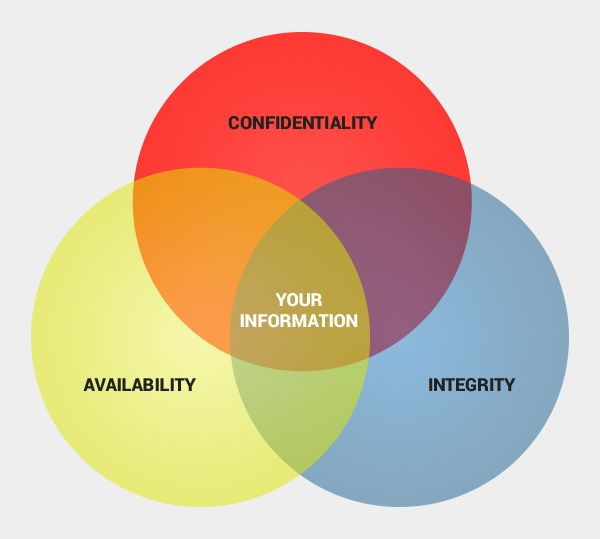

“Security is a property (or more accurately a collection of properties) that hold in a given system under a given set of constraints”
System
anything from hardware, software, firmware, and information being processed, stored, and communicated
Constraints
define an adversary and their capabilities
What is Operational Security (OpSec)
“Operational security (OPSEC) is a security and risk management process that prevents sensitive information from getting into the wrong hands.”[1]
Who uses Operation Security?
Government
Enterprise
You!
Why is OpSec Important
This is mainly aimed at companies:
Protection of Sensitive Information
Prevent customer sensitive customer info from being stolen
Preservation of Privacy
Intangible property right
Right to be let alone
Right to be anonymous
Right to control who, when, where, and how information about us is shared
Mitigation of Threats
If something bad happens, it wont be as bad
Maintaining Operational Continuity
Stop everything from going to a complete standstill
Core Principles of OpSec
Confidentiality
Ensures that sensitive information is only accessible to authorized individuals or systems, preventing unauthorized disclosure.
Integrity
Guarantees that data remains accurate, complete, and unaltered during storage, transmission, and processing, maintaining its reliability and trustworthiness.
Availability/Accessibility
Ensures that systems and resources are accessible and operational when needed, minimizing downtime and disruptions to critical services or functions.
Accountability
Establishes responsibility for actions taken within the system, enabling traceability and accountability for security incidents or breaches.

center width:500px
What is Threat Modeling?
Definition of threat modeling:
“Threat modeling is the process of using hypothetical scenarios, system diagrams, and testing to help secure systems and data.” [1]
Images of Common Hypotheticals
How does an SQL injection effect CIA?
it effects the integrity
Go over common threats you might face in your own deployments.
SQL Injections
DDOS Attacks
Security Breaches
Purposes of Threat Modeling
As we discussed with hypotheticals, threat modeling…
Identifies Potential Risks
Where is it coming from
Helps us understand common Attack Vectors
How are they doing it
Prioritizes Security Concerns
What should we address first
KEY THING: Do all this before the incident happens
Benefits of Threat Modeling
Proactive Risk Management
We address risks before they are tested in reality
Promotes Continuously Improvement
Threat modeling occurs constantly so policy does not stagnate
Prioritizing risks saves time and $$$
Knowing what is most important saves time, energy, and resources
Overview of Threat Modeling Process
There are many different well-defined processes for Threat Modeling
But we will use this simplified model for our usecase
“A property of a system or its environment which, in conjunction with an internal or external threat, can lead to a security failure, which is a breach of the system’s security policy.”
Classifications
Abstraction level
low vs high level, OSI network layers, hardware/firmware/OS/middleware/application, system vs. process, …
Type of error/condition/bug
memory errors, range and type errors, input validation, race conditions, synchronization/timing errors, access-control problems, environmental/ system problems (e.g. authorization or crypto failures), protocol errors, logic flaws, …
Age: zero-day vs. known
Disclosure process
private vs. public, “responsible” vs. full disclosure, …
Multiple vulns. are often combined for a single purpose
Assessing Risks
Vulnerability assessments:
penetration testing
White hat/ Grey Hat Hackers
code reviews
Enforced on the software side, unit testing
attacker reconnaissance
Passive reconnaissance: no direct interaction with the target system Information gathering from public sources Google Dorking
Passive network eavesdropping
Dumpster diving (e.g., recover data from discarded hard drives)
Information leakage
Active reconnaissance: attacker’s activities can be directly detected and logged
Network scanning
Service enumeration
OS and service fingerprinting/probing
Social engineering
Risk assessment methodologies
qualitative vs. quantitative
likelihood and impact
OpSec in Practice
Threat model ➔ security policy ➔ security mechanisms
Security policy: a definition of what it means for a system/ organization/entity to be secure